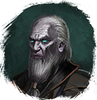

Открыть в интерактивной вики →
| Уровень | 55 |
|---|---|
| Сила (PvE) | 2905 |
| Аспект арены | Solnai |
| Здоровье | 35 000 |
| Мана | 8000 |
| Выносливость | 4000 |
| Респаун | 17 - 29 минут |
Дроп

Путь

Тень
Аспект

Solnai
Вариант 2: Путь
Тень
Вариант 2: Аспект
Solnai
Статистика

Уровень: 55
") 2 905
2 905
Здоровье: 35 000
Мана: 8 000
Выносливость: 4 000
Умения
| Буря Молния Теневой Удар | Теневая аура Удар в живот Отупление Булавка в глаз Явление смерти Укол Куклы Отравление |
Иммунитеты / особые умения
Устойчивость перед лицом смерти
Команда
-
Локация
Замок Гастельхоф
Вариант 2: Статистика
Уровень: 26
1 066
Здоровье: 2 500
Мана: 4 000
Выносливость: 2 000
Вариант 2: Зоны атаки
Вариант 2: Умения
| Буря Молния Теневой Удар | Теневая аура Удар в живот Отупление Булавка в глаз Явление смерти Укол Куклы Отравление |
Вариант 2: Иммунитеты / особые умения
Устойчивость перед лицом смерти
Вариант 2: Команда
-
Вариант 2: Локация
Библиотека Клавдия
Вариант 2: Дроп
| Рары | Синергетики | Эпики | |||
 Рары для питомцев Рары для питомцев Рары для питомцев Рары для питомцев Рары для питомцев Рары для питомцев Рары для питомцев Рары для питомцев Рары для питомцев Рары для питомцев Рары для питомцев Рары для питомцев | 20-40 ур. |  | |||
| Прочее: - | |||||